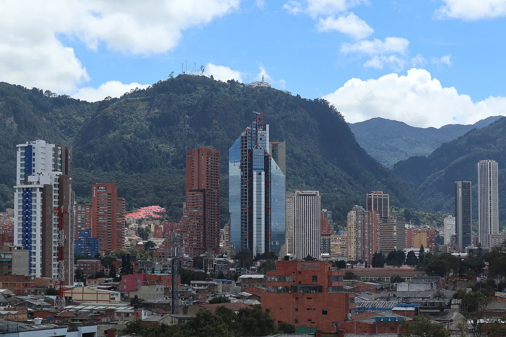
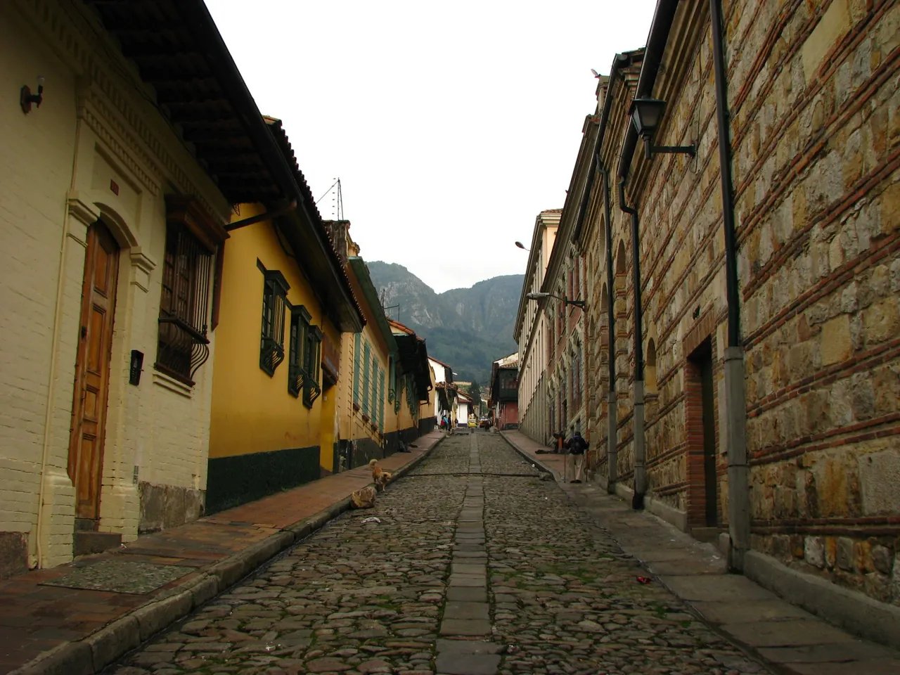
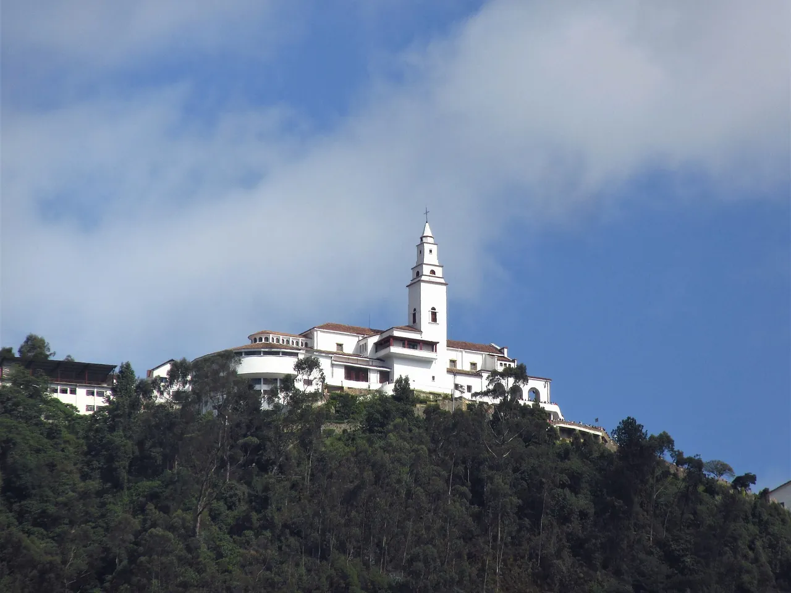
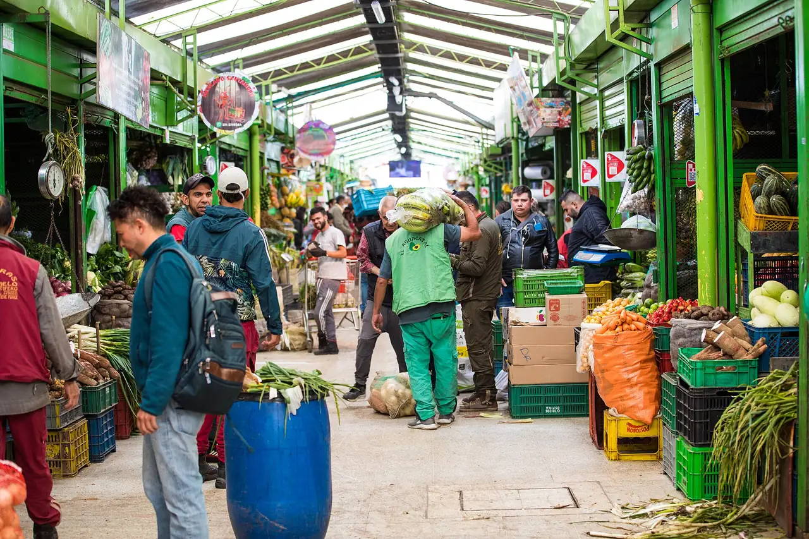
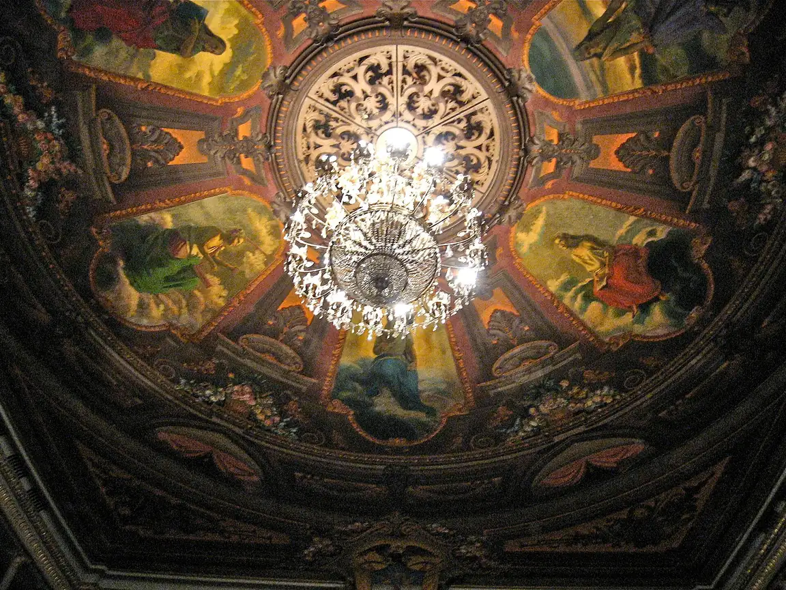
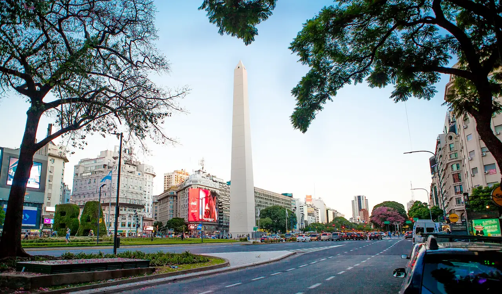
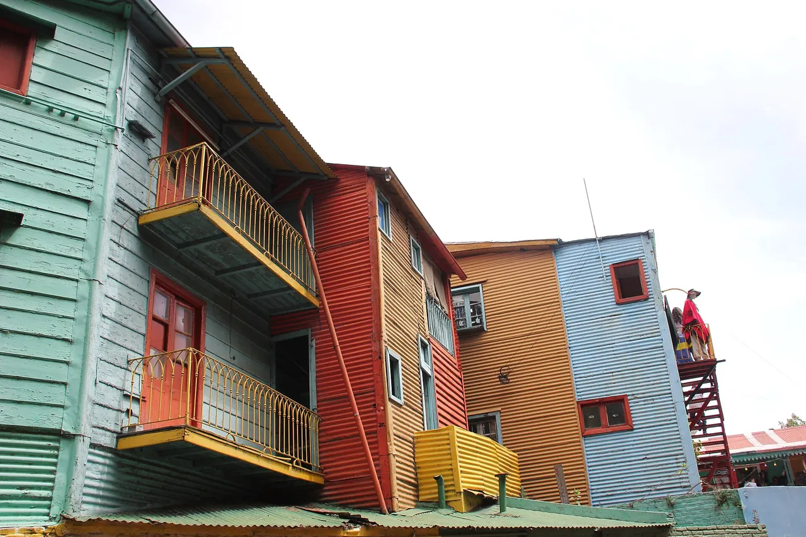
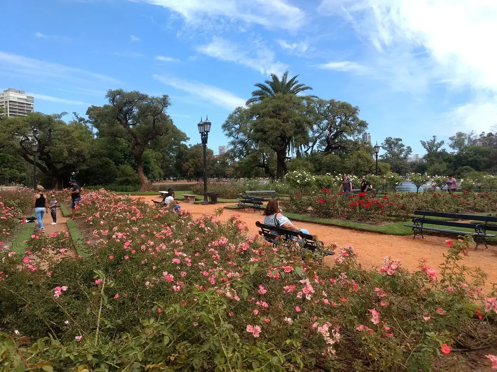
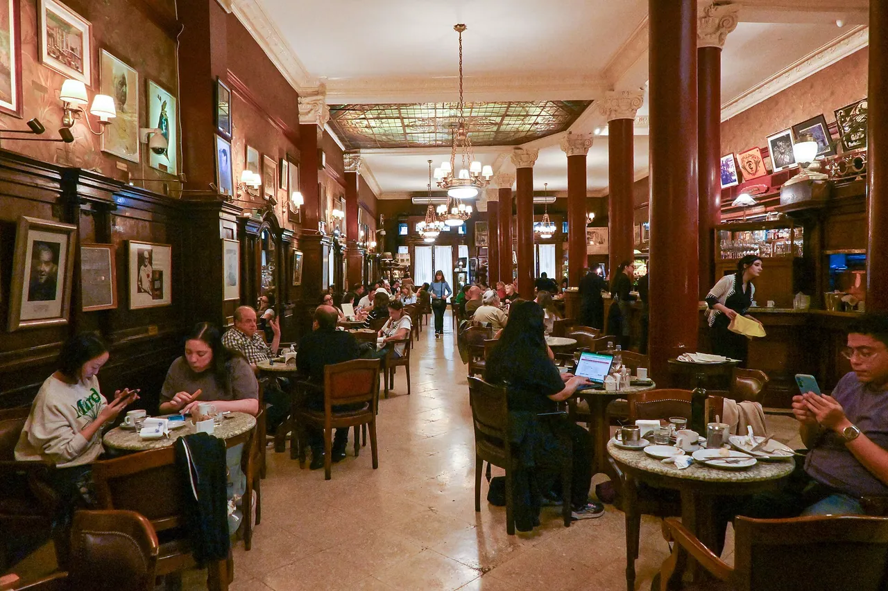
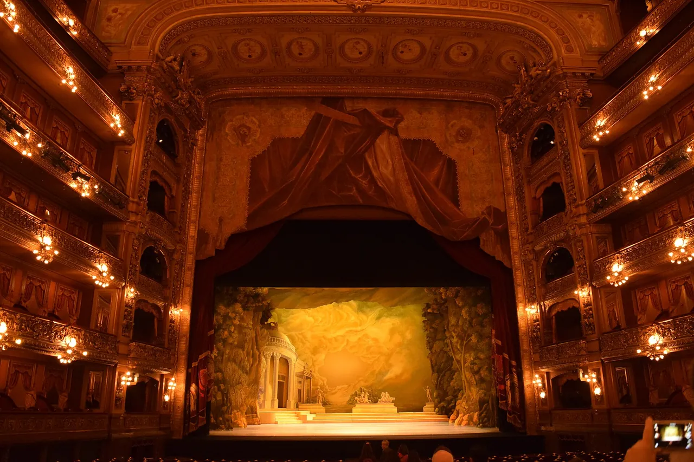

10 photos · 2 cities · photo 1 (outlined) is the mosaic's large photo · generated 2026-11-08
Bogotá bogota

1. Downtown towers below Monserrate and the green Eastern HillsAlt: Glass and brick high-rises in front of steep, forested green mountains under a blue sky with white cloudsJos Cuevasc · CC BY-SA 4.0 · Commons · 1280×853

2. A cobbled colonial street in La Candelaria, the old townAlt: A narrow cobbled street sloping up between old yellow and stone-walled houses with wooden doors and balconies, with green hills at the endRikimedia · CC BY-SA 3.0 · Commons · 1280×960

3. The Monserrate sanctuary on its forested peak above the city, reached by cable car or funicularAlt: A white church with a bell tower on top of a mountain covered in dense green forest, under a blue sky with cloudsFelipe Restrepo Acosta · CC BY-SA 4.0 · Commons · 1280×960

4. Fruit and vegetable stalls at Paloquemao marketAlt: Shoppers walking between market stalls piled with fruit and vegetables under a green iron roofMussi Katz · CC0 · Commons · 1280×853

5. The painted ceiling and chandelier of the Teatro Colón, the city's 1892 opera houseAlt: A domed theatre ceiling painted with allegorical figures around a large crystal chandelier, ringed by gilded mouldingsDebray Leon · CC BY-SA 3.0 · Commons · 1152×864
Buenos Aires buenos-aires

1. The Obelisco on Avenida 9 de Julio, one of the world's widest avenuesAlt: A tall white obelisk rising at the end of a broad tree-lined avenue, with traffic, billboards and apartment blocks under a pale blue skyleonardo samrani · CC BY 2.0 · Commons · 1280×751

2. Painted corrugated-iron houses on Caminito in La BocaAlt: Old houses clad in brightly painted green, red, orange and blue corrugated metal, with wooden balconies, against a pale skyLars Curfs · CC BY-SA 3.0 nl · Commons · 1280×853

3. The Rosedal rose garden in the Bosques de Palermo parksAlt: Pink rose beds in the foreground of a park with red gravel paths, benches, palm and shade trees and a few strollers under a blue skyElGuruCesar · CC BY-SA 4.0 · Commons · 1152×864

4. Café Tortoni on Avenida de Mayo, open since 1858Alt: A long wood-panelled café with marble tables, leather chairs, columns and stained-glass ceiling panels, with customers eating and talkingProtoplasmaKid · CC BY-SA 4.0 · Commons · 1280×853

5. The horseshoe auditorium of the Teatro Colón opera houseAlt: A grand red and gold opera auditorium with tiers of lit boxes curving round a stage with a painted backdropLeandro Kibisz · CC BY-SA 4.0 · Commons · 1280×853

_1.jpg){kind=link}


.jpg){kind=link}


_02.JPG){kind=link}